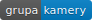
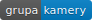

Kamera ANPR 4 – Karta katalogowa¶
Wersja PL 4.0.2, udostępniona dnia 23 paź 2020.
 

{kind=link}
NeuroCar Kamera ANPR – Model 4 to uniwersalny system przeznaczony do detekcji i identyfikacji pojazdów na podstawie analizy wideo. Kamera przetwarza strumień wideo, automatycznie wykrywa każdy pojazd i identyfikuje go poprzez rozpoznawanie numeru rejestracyjnego (ANPR). Dodatkowo rozpoznawane są także: klasa pojazdu, producent i wersja modelowa oraz kolor. Kamera może pracować w przestrzeni zamkniętej i na zewnątrz, 24/7 (dzień-noc), w ekstremalnych warunkach pogodowych bez zewnętrznych źródeł światła. Dzięki niskiemu poborowi mocy i niskiemu napięciu zasilania urządzenie może pracować na bateriach.
Funkcje¶
Nazwa funkcji |
Dostępność |
Opis |
|---|---|---|
Wykrywanie pojazdu |
standard |
> 98%, dla prędkości pojazdu w zakresie 0÷250 km/h, na podstawie strumienia wideo (free flow), tablica rejestracyjna musi być widoczna i czytelna |
Wykrywanie pojazdu także bez tablicy |
opcja |
> 99%, dla prędkości pojazdu w zakresie 0÷250 km/h, na podstawie strumienia wideo |
Wykrywanie towarów niebezpiecznych |
opcja |
> 90%, tablice ADR, „Odpady”, „A” |
Wykrywanie kierunku |
standard |
> 99%, pojazd cofa = -1, pojazd się zbliża = 1, nieznany kierunek = 0 |
Wykrywanie zatrzymania |
standard |
tak, filtracja wielokrotnych rozpoznań (stop-and-go) |
Liczba pasów ruchu |
standard |
1÷3 – rozpoznawanie dla 3 pasów tylko przy umieszczeniu kamery nad pasem środkowym |
Wykrywanie pasa ruchu |
standard |
tak |
Rozpoznawanie numeru rejestracyjnego |
standard |
> 97% dla wszystkich wykrytych pojazdów, posiadających numer rejestracyjny
czytelny ludzkim okiem, wybór regionu: |
Rozpoznawanie kraju pochodzenia |
opcja |
> 97% dla wszystkich pojazdów z rozpoznanym numerem rejestracyjnym, 48 krajów jednocześnie (w tym cała Europa) |
Rozpoznawanie klasy pojazdu (AVC) |
opcja |
> 92%, klasy: osobowy (7), dostawczy (11), ciężarowy (3), autobus (5), motocykl (10); tylko dla widoku z przodu, wymagany dodatkowy oświetlacz IR w przypadku niewystarczającego oświetlenia (np. w nocy) |
Rozpoznawanie marki |
opcja |
> 90%, rozpoznanie takich marek jak „bmw”, „audi”, itd.; tylko dla detekcji z przodu; w nocy konieczny dodatkowy oświetlacz IR |
Rozpoznawanie modelu |
opcja |
> 80%, rozpoznanie takich marek i modeli jak „bmw 5”, „audi Q5”; tylko dla detekcji z przodu; w nocy konieczny dodatkowy oświetlacz IR |
Pomiar prędkości pojazdu |
opcja |
dokładność ±10% dla wszystkich pojazdów z rozpoznanymi tablicami rejestracyjnymi, po automatycznej kalibracji |
Uwaga
Wszystkie parametry jakościowe podane są jako wartości maksymalne i określone są zostały dla optymalnej lokalizacji i konfiguracji urządzenia (patrz Instrukcja montażu).
Sprzęt¶
Wariant |
A |
B |
|---|---|---|
Oznaczenie |
|
|
Rozmiar obrazu |
3.2M px |
5M px |
Przetwornik |
CMOS |
|
Global shutter |
tak |
|
Sensor |
SONY IMX265LQR |
SONY IMX264LQR |
Rozmiar sensora |
1/1.8” |
2/3” |
Rozdzielczość (maks.) |
2048×1536 |
2448×2048 |
Częstotliwość (maks.) |
25 fps |
15 fps |
Funkcja dzień-noc |
tak (mechanicznie przełączany filtr IR) |
|
Obiektyw |
wbudowany |
|
Ogniskowa obiektywu |
11÷40 mm (zdalnie sterowana) |
|
Przysłona obiektywu |
F/1.4 ÷ F/16 (zdalnie sterowana) |
|
Ostrość obiektywu |
zdanie sterowana |
|
Korekcja IR |
tak |
|
Promiennik IR |
wbudowany, błysk 850nm, 6 diod LED, 20° lub 40° |
|
Procesor |
Intel® ATOM™ E3845, 64-bit quad-core x86, 1.91GHz |
|
Pamięć RAM |
4G-Byte DDR3L-1333 |
|
Pamięć główna |
64G-Byte eMMC |
|
Pamięć pomocnicza |
Karta SDHC/SDXC, do 128GB (wymienialna) |
|
Szyfrowanie sprzętowe |
opcja (TPM 1.2) |
|
Interfejs Ethernet |
1×100M/1000M RJ45 port by Intel® I210 controller |
|
Interfejs szeregowy |
1×RS232, 1×RS485 |
|
Interfejs GPIO |
2×programowalny port IO, dostępny jako wejście lub wyjście (5V-TTL) |
|
Interfejs IR |
1×wejście, 1×wyjście do sterowania promiennikiem IR lub przekaźnikiem, obciążenie dla 100mA/50V |
|
Zegar |
wbudowany, kontrolowany przez NTP i/lub GPS |
|
Watchdog |
wbudowany, od 1 do 256 s |
|
GPS |
opcja (z PPS) |
|
WiFi |
opcja (wymienne z modułem 3G/LTE) |
|
3G, 4G, LTE modem |
opcja (wymienne z modułem WiFi) |
|
Zasilanie |
24VDC ±10% |
|
Zużycie energii (maks.) |
50 W |
|
Wymiary (S×W×D) |
194×117×360 mm |
|
Waga |
3 kg |
|
Temperatura pracy |
-40°C ÷ +65°C |
|
Ochrona przed wodą i pyłem |
IP66 (opcja IP67 - wymagane dodatkowe uszczelnienie) |
|
Zgodność |
CE |
|
Oprogramowanie¶
Element |
Opis |
|---|---|
Firmware |
NeuroCar Terminal VI (Vehicle Identification) [2] |
Wersja |
4.0 |
GUI |
tak, przeglądarka WEB (HTML5) |
API |
tak, REST |
Szyfrowanie |
tak, SSL (HTTPs) |
Uwierzytelnianie |
HTTP: basic, digest, token |
Formaty danych |
JSON, JPG, TAR |
Alerty |
tak, pojazdy wybrane na podstawie ich cech |
Powiadomienia |
notyfikacja |
Akcesoria¶
{kind=link}
 Uchwyt montażowy przeznaczony do montażu na maszcie, posiadający dwa
stopnie swobody pozwalające na odpowiednie ustawienie kamery. Wykonany
ze aluminium pomalowanego proszkowo, posiada otwory pozwalające na odpowiednie
przeprowadzenie kabli zasilających –
Uchwyt montażowy przeznaczony do montażu na maszcie, posiadający dwa
stopnie swobody pozwalające na odpowiednie ustawienie kamery. Wykonany
ze aluminium pomalowanego proszkowo, posiada otwory pozwalające na odpowiednie
przeprowadzenie kabli zasilających – opcja.
—
Wymiary¶

Odesłania¶
- 1
NeuroCar. Neurocar documentation catalogue. March 2020. URL: https://docs.neurocar.pl/pro/ncar-doc-catalog/.
- 2
NeuroCar. Terminal vehicle identification 4 - data sheet. March 2020. URL: https://docs.neurocar.pl/pro/ncar-t-vi-4-info/.
Zmiany¶
4.0.2 2020-04-12
Rozszerzenie niektórych opisów
Lepsze formatowanie dokumentu w formie PDF-a
4.0.1 2020-03-08
Dodatkowe informacje o akcesoriach
4.0.0 2020-03-01
Inicjacja dokumentu
Zobacz także¶
Więcej informacji o produktach NeuroCar można znaleźć na stronie https://www.neurocar.pl, albo w Elektronicznym Katalogu Produktów NeuroCar [1].